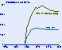
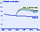

Electricity Supply
Summary
of the Kyoto Report (Text Only)
Introduction
This chapter discusses the
electricity supply side options under various domestic carbon emissions
reduction cases, particularly the 24-percent-above-1990 (1990+24%),
9-percent-above-1990 (1990+9%) and 3-percent-below-1990 (1990-3%) cases. The impacts on
electricity sector fuel use, capacity expansion and retirement decisions, electricity
prices, and carbon emissions are discussed. In addition, the results of sensitivity cases
incorporating alternative assumptions about improvements in technology costs and
performance, the potential role for new nuclear power plants, and reducing impacts on the
coal industry are also discussed. The effects of demand-side decisions (i.e., consumer
appliance choices and usage, as discussed in Chapter 3) that would reduce the demand for
electricity are also considered.
During the approximately
100-year history of the electricity supply industry, the key fuels used to meet the
ever-increasing demand for electricity have changed as new generating technologies have
emerged and fuel prices varied (Figure 65). Beginning with
small hydroelectric facilities just before the turn of the century, the industry then
turned to fossil fuels. Among the fossil fuels, coal has almost always played a major role
in U.S. electricity generation, and it remains the dominant fuel today. Oil and natural
gas use has varied, depending on their respective prices. In fact, concerns about future
oil and natural gas prices contributed to the emergence of nuclear power plants in the
1960s. In today’s market, coal-fired power plants produce just over half of the
electricity used in the United States, nuclear plants 19 percent, natural gas plants 14
percent, and hydroelectric plants about 10 percent. The remaining 7 percent comes from
oil-fired plants and plants using other fuels such as municipal solid waste, wood, and
geothermal and wind power.
In the reference case, which
does not include the Kyoto Protocol, the power generation sector is expected to become
more energy-efficient over the next 20 years as new, more efficient power plants are
built. At the same time, however, dependence on fossil fuels, especially natural gas and
coal, is expected to increase, leading to significant growth in power plant carbon
emissions. Coal is expected to remain the dominant fuel as existing plants are used more
intensively, but generation from natural gas is expected to increase rapidly, with
gas-fired plants making up the vast majority of new capacity additions. Of the major
non-carbon-based fuels, hydroelectric generation is expected to change very little, and
nuclear generation is expected to decline as older, more costly plants are retired. Looked
at another way, while the efficiency of the generation sector, expressed as the amount of
energy in terms of British thermal units (Btu) needed to produce each kilowatthour of
electricity, is expected to improve, increasing dependence on fossil fuels will lead to
more rapid growth in electricity sector carbon emissions than in electricity sales (Figure 66). Without the improvement in efficiency, growth in
fossil fuel use would match the growth in fossil-fired generation.
Although the costs of
non-carbon-based generating technologies have fallen, they still are not widely
competitive with fossil fuel technologies. As a result, the most economical options
available to electricity suppliers for meeting the demand for electricity over the next 20
years are existing coal plants and new natural gas plants. In 1995, the average operating
cost of coal-fired power plants was 1.8 cents per kilowatthour. Only 66 percent of their
maximum potential output was needed, however, to meet the 1996 level of demand. Over the
next 20 years, as the demand for electricity grows, the utilization of coal-fired plants
is expected to approach 80 percent. For new capacity additions, the low capital costs and
high operating efficiencies of natural-gas-fired combined-cycle plants make them the most
economical choice for most uses.
Electricity suppliers have a
variety of options available for reducing their carbon emissions. The degree to which each
of the options is employed will depend on the level of reduction required and the
resultant carbon price (i.e., the market value of a “carbon emissions permit”)
that evolves in the marketplace. Many of the options may require a significant financial
incentive before they become economically attractive. Among the key carbon reduction
options available to electricity suppliers are reducing the use of relatively
carbon-intensive power plants (particularly coal-fired plants), increasing the use of less
carbon-intensive technologies (mainly natural-gas-fired plants), the use of
“carbon-free” technologies (i.e. wind, solar, biomass, geothermal, and nuclear),
improving the operating efficiencies of existing plants, and investing in demand-side
technologies that reduce electricity consumption.
In the short run, before a
large number of new plants can be built, power suppliers will have to reduce carbon
emissions by increasing the use of less carbon-intensive plants. For example, in
today’s market, most oil and natural gas steam plants are not used very intensively
because of their relatively high operating costs. If carbon reduction efforts are made,
however, their use is likely to increase, because they produce less carbon per
kilowatthour than do coal-fired plants. In the longer run, power suppliers are more likely
to turn to new, less carbon-intensive or carbon-free plants.
In this analysis, electricity
producers are assumed to have 15 new generating technologies to choose from when new
resources are needed, or when it is no longer economical to continue operating existing
plants (Table 16). The lead times in the tables represent the
time needed for site preparation and construction. Environmental licensing may take longer
in some cases. The first-of-a-kind costs represent the cost of building a plant when the
technology first becomes available, which tend to be relatively high until experience is
gained with the technology. The nth-of-a-kind costs represent costs for
technologies when they have matured. For technologies that are already considered mature,
the two costs will be the same. Investors in the generation market are assumed to make
their decisions by reviewing each technology’s current and future capital, operations
and maintenance, and fuel costs. Both current and expected future costs are considered,
because generating assets require considerable investment and last many years. Therefore,
developers are assumed to evaluate the costs of building and operating a plant for 30
years when making their decisions.54 If the Kyoto
Protocol is enacted, developers will also have to consider the relative level of carbon
emissions from each technology, as well as the expected carbon prices. Depending on the
carbon price, the economic decision could be tilted toward technologies that emit less
carbon per unit of electricity produced.
Overall, because of the
relatively wide variety of options available to them, electricity suppliers are expected
to account for a disproportionately large share of projected carbon reductions.
Nationally, to meet an emissions target 9 percent above 1990 levels, overall carbon
emissions in 2010 would have to be reduced by 18 percent from their projected level in the
reference case, which is 33 percent above 1990 levels. But in order to meet the target,
emissions from the electricity sector in the 1990+9% case are reduced by 39 percent in
2010 relative to the reference case (Figure 67). The
situation is similar in the 1990-3% case: electricity sector carbon emissions in 2010 are
54 percent lower than the reference case level. The reduction in carbon emissions is
projected to be accomplished through a combination of fuel switching, improvements in
end-use efficiency, and improvements in generator efficiency (Figure
68).
In the carbon reduction cases,
carbon emissions in the electricity sector are projected to begin falling even before the
enactment of the Kyoto Protocol, because power plant developers are assumed to consider
future costs in their investment decisions. As the implementation date of the Kyoto
Protocol approaches, it is assumed that developers will incorporate their expectations of
carbon prices into their plans for new capacity additions, and that more lower-carbon
generating capacity will be brought on line than would have been in the absence of the
expected carbon reduction mandate.
Trends in Fuel Use and
Generating Capacity
To reduce power plant carbon
emissions in the 1990+9% case, the mix of fuels used to produce electricity is expected to
change significantly from historical patterns (Figure 69).
The change required is possible, but it will be challenging. For example, the shift
required to stabilize carbon emissions 9 percent above 1990 levels is unprecedented
historically. Even during the 1960s and 1970s, when nuclear generation grew rapidly, the
change in fuel use patterns was not as dramatic as would be required in this case. In the
1990+24% case, the shift is less pronounced, but coal-fired generation still is projected
to be 17 percent lower in 2010 and 40 percent lower in 2020 than in the reference case.
Across the carbon reduction cases, the projections show a consistent shift away from coal
to natural gas and renewables for electricity generation. In addition, nuclear generation
remains near current levels, and the demand for electricity falls as the carbon reduction
goal tightens (Figure 70).
The shift away from coal-fired
generation occurs because coal accounts for such a large share of power plant carbon
emissions. In 1996, coal-fired power plants produced an estimated 92 percent of the carbon
emissions in the power generation sector. In the reference case, that share is expected to
be 86 percent in 2010; and in 2020, even though natural-gas-fired generation grows
rapidly, coal plants still are expected to account for 81 percent of total carbon
emissions from the electricity sector. Per unit of fuel consumed (Btu), coal plants emit
nearly 80 percent more carbon than do natural gas plants, and the difference is even
greater per megawatthour of electricity generated (Table 17). New
natural gas combined-cycle plants are much more efficient than existing coal plants,
requiring less than two thirds the amount of fuel (in Btu) to produce a kilowatthour of
electricity. As a result, per megawatthour of electricity produced, existing coal plants
release nearly 3 times as much carbon into the atmosphere as do the most efficient new
natural gas plants.
Coal
Generation
In the carbon reduction cases,
the projected decreases in coal-fired electricity generation are dramatic. In the
1990+24%, 1990+9%, and 1990-3% cases, coal-fired generation in 2010 is expected to be 18
percent, 53 percent, and 75 percent lower, respectively, than in the reference case (Figure 71). In 2020, the differences from the reference case
are even larger: 41 percent in the 1990+24% case, 77 percent in the 1990+9% case, and over
96 percent in the 1990-3% case. In 1990-3% case, coal-fired generation is virtually
eliminated. Coal plants simply are not very economical when carbon prices are high.
Such reductions in coal use
would come at a cost. Although they are major carbon emitters, existing coal plants are
very economical, and their operating costs have been falling (Figure
72). Under more stringent emissions reduction targets, however, with rising carbon
prices, the economics of coal-fired generation would change (Table 18).
For a power supplier deciding whether to continue operating an existing coal plant, build
a new coal plant, build a new natural-gas-fired combined-cycle plant, or convert an
existing coal-fired plant to natural gas, continued operation of the coal plant would be a
clear winner in the absence of a carbon price. As the carbon price rises, however, the new
natural gas plant looks more attractive. In the hypothetical example, assuming a
70-percent capacity factor for the four types of plant, it would make sense to shut the
coal plant down and build a new natural gas plant at a carbon price of approximately $100
per metric ton of carbon.55 Assuming a 30-percent
capacity factor, the crossover point would be closer to $200 per metric ton of carbon. In
this hypothetical example, the carbon prices that would induce power suppliers to retire
existing coal plants are high, because the operating costs of most existing coal plants
are low. In reality, the crossover point would vary from plant to plant.
Generating Capacity
In all the carbon reduction
cases, significant amounts of coal capacity are expected to be retired (Figure 73). In general, the projected changes in the mix of
generating capacity parallel the changes in fuel use. As the domestic carbon reduction
requirement becomes more stringent, more coal capacity is retired and more natural gas and
renewable plants are built (Figure 74). In the 1990+24% and
1990+9% cases, there is 3 percent and 10 percent less coal-fired capacity by 2010, and 13
percent and 36 percent less by 2020. Approximately two-thirds of the existing coal-fired
capacity is projected to be retired by 2020 in the 1990-3% case. The net result is that
the share of capacity accounted for by coal plants declines from around 40 percent in 1996
to just over 29 percent in 2010 and to slightly over 11 percent in 2020 in the 1990-3%
case.
One possible effect of the
projected coal plant retirements is that some of the plants may be shut down before their
total investment costs are recovered. Such unrecovered costs would be stranded. Most coal
plants are fairly old, however, and their construction costs have already been recovered.
On the other hand, some plant owners could suffer losses because plants they expected to
be profitable might no longer be profitable when carbon prices are imposed.
Natural Gas
Generation
The story for natural gas
generation is the opposite of that for coal (Figure 75). As
the requirement to reduce carbon emissions tightens and the associated carbon price rises,
natural-gas-fired generation becomes more economical than coal-fired generation. In 2010
and beyond, electricity generation from natural gas is between 17 percent and 76 percent
higher in the carbon reduction cases than in the reference case projections. Overall,
between 1996 and 2020, natural gas generation increases by almost 500 percent in the most
stringent carbon reduction cases, and even in the 1990+24% case it is more than 30 percent
higher than in the reference case by 2020. Although it may be expensive to stop using
low-cost coal plants, replacing them with efficient natural gas combined-cycle plants
reduces carbon emissions per kilowatthour of electricity generated by nearly two-thirds.
The rate of increase in
natural-gas-fired generation varies over the 24-year projection period (Figure 76). When carbon emission limits are first imposed in
2005, there is rapid growth in natural gas generation, both because the rising carbon
price makes existing natural gas plants more economical than existing coal plants and
because new natural gas plants are added quickly. After the initial shift to natural gas,
the growth in natural gas generation continues, but at a slower rate. In the later years
of the projection, natural gas generation does not increase as rapidly, because
carbon-free renewable technologies become economical as the demand for electricity grows
and natural gas prices increase.
In the carbon reduction cases,
power plant use of natural gas (excluding industrial cogeneration) is projected to rise
from roughly 3 trillion cubic feet in 1996 to between 8 and 12 trillion cubic feet in 2010
and between 12 and 15 trillion cubic feet in 2020. The projected increase in demand for
natural gas in the electricity sector contributes to higher gas prices overall. As a
result, only small increases are projected for gas demand in other sectors for the less
stringent cases. In the more stringent cases, gas demand in the other sectors (excluding
industrial) actually declines. For example, in the 1990+9% case, electricity sector gas
use in 2010 is 57 percent higher than projected in the reference case, but total gas
consumption is only 10 percent higher (see Chapter 5 for a
discussion of natural gas supply).
Generating Capacity
There is only a little
variation in the projections of total natural-gas-fired generating capacity across the
carbon reduction cases. On the other hand, there are differences in the types of natural
gas plants projected to be built (Figure 77). In the more
stringent carbon reduction cases, with higher carbon prices, the mix of natural gas plants
shifts from relatively inefficient simple natural gas turbines and older steam plants to
more efficient combined-cycle facilities. The trend toward more efficient gas-fired
technologies would be even stronger in the 1990-3% case without the significant reduction
in electricity demand that is projected relative to the reference case (see below, Figure 84).
A critical question is whether
new natural gas capacity can be built in sufficient quantity and in the right places to
reduce carbon emissions to the levels required by the Kyoto Protocol. For example, in the
1990-3% case, the amount of capacity, mostly natural gas, projected to be built in some
years far exceeds the amount of capacity built in any year since 1983. The average amount
of generating capacity brought on line each year since 1983 has been around 10 gigawatts
(33 typical plants).56 The peak year was 1985,
when just under 22 gigawatts of capacity was added. In the 1990-3% case, annual additions
are projected to exceed 28 gigawatts (93 typical plants) in some years.
Some gas-fired plants are
expected to be built to meet growth in demand, but most are likely to replace retiring
coal plants. From 2008 to 2020, the projected additions of generating capacity in the
1990-3% case average 24 gigawatts annually, with just over 28 gigawatts in 2009. This
level of construction is high but not unprecedented. It is actually less than the amount
of capacity that was built annually during the 1970s, when the demand for electricity was
growing at more than twice the rate projected in the reference case.
Given time and forewarning,
the natural gas plant design and construction industry should be able to meet the
challenge presented in the carbon reduction cases; however, the prices for new gas-fired
facilities might rise above those used in this analysis. In addition, the situation could
be exacerbated by the fact that many other countries may also be turning to natural gas in
order to reduce their carbon emissions.
Not only will a large number
of new natural gas plants have to be built, they will also have to be built in the right
places. Today’s electricity transmission system is constructed around major load and
supply centers, connecting major cities to major power plants. The location of power
plants is critical to the reliability of the electricity supply system. If, as expected, a
large number of existing coal plants are retired to reduce carbon emissions, many of the
new gas plants will have to be built at the locations of the coal plants they replace, in
order to maintain the reliability of the system. (Biomass and wind plants must be built
where their resources are available.) The alternative would be to reconfigure the
transmission system to accommodate new plant locations,57 an undertaking that might require additional investment.
One option for adding new
natural-gas-fired capacity would be to modify existing coal-fired plants to burn natural
gas instead of coal. This option, however, may not prove to be economical. Generally,
there are two approaches for converting a coal plant to burn gas. The first is simply to
modify the existing coal boiler so that it can be fired with natural gas. From a
mechanical perspective this is not terribly difficult or expensive. The required plant
modifications would be expected to cost $70 to $80 per kilowatt of capacity, mainly for
new burners and gas handling equipment (compressors, metering station, distribution
headers, etc.). In terms of performance, there would be a small loss of efficiency, 2 to 5
percent, if gas were burned in a boiler originally designed to burn coal.58
The main problem with this
approach to plant conversion is the relative thermal inefficiency of existing coal plants.
The majority of older coal plants consume between 10,000 and 10,500 Btu of fuel for each
kilowatthour of electricity they produce,59 as
compared with 6,500 to 7,500 Btu of fuel input for each kilowatthour of electricity
produced by a new gas-fired combined-cycle plant. Existing coal plants are economical
because the fuel is inexpensive, not because they are thermally efficient.
As described above (see Table
18), in the absence of required carbon emissions reductions, existing coal-fired plants
are the most economical option for electricity generation. Conversion of existing plants
from coal to gas is not the most economical option if the plant is to be used at a high
capacity factor. If the price of carbon emissions rises, however, continuing to run the
existing coal plant becomes less economical. Assuming a 70-percent capacity factor and a
carbon price of $100 per metric ton, it would make sense to abandon the plant (not the
site) and build a new gas-fired combined-cycle plant. At a lower capacity factor, the
carbon price would have to be higher before the operational cost savings from the greater
efficiency of a new combined-cycle plant would offset its higher capital costs (Table 18).
The second approach to using
gas in an existing coal plant would be to “repower” it by converting it into a
natural gas combined-cycle plant. This approach would result in higher plant efficiency,
but it would also be much more expensive than the first approach. In a typical repowering,
the coal handling system and the boiler are replaced with new combustion turbines and a
heat recovery boiler. The only
significant part of the plant that is maintained is the original turbine generator. This
approach can be attractive at some facilities, but it is not without problems. New
combined-cycle plants are packaged systems. The turbines, heat recovery boiler, and
turbine generator are designed to work smoothly together for optimal efficiency. Because
many older coal-fired plants were custom designed and built, they do not always come in
standard sizes or configurations or with standard operational parameters. If such
facilities are to be repowered, additional work will be required to integrate the system
components. Given that for a typical combined-cycle plant the steam turbine generator
accounts for between 10 and 22 percent of the capital cost of the plant,60 the additional work could easily drive the cost of
repowering beyond what it would cost simply to replace the plant with a new, more
efficient packaged combined-cycle plant.
Renewable Fuels
In the carbon reduction cases,
U.S. electricity suppliers are expected to turn to renewable energy resources later in the
projection period to meet the demand for electricity while reducing carbon emissions.
Wind, biomass, geothermal, solar, and hydropower resources generally are thought to have
less environmental impact than fossil fuels; they are domestically available; and in some
instances they have begun to penetrate U.S. electricity markets. Significant growth in the
use of nonhydroelectric renewable resources for electricity generation is expected to
accompany efforts to reduce carbon emissions (Figure 78).
The largest increases in
renewable generation are expected after 2010 in the most stringent carbon reduction cases
(Table 19). For this reason, the results of the
7-percent-below-1990 (1990-7%) case are also discussed in this section. Before 2010,
nonhydroelectric renewable technologies generally are not competitive with new natural gas
plants, but their costs are expected to fall over time. With higher carbon prices, these
technologies can be expected to play a significant role in reducing carbon emissions. In
the reference case little growth in generation from renewables is expected. In the carbon
reduction cases, nonhydroelectric renewable generation is 1.1 to 1.7 times the reference
case level in 2010 and 1.5 to 4.8 times the reference case level in 2020.
Because of the lack of market
experience with renewable technologies other than hydropower, there is considerable
uncertainty about the costs of developing them on the scale that would be needed for large
carbon emission reductions. It is also unclear whether electric system reliability can be
maintained if large quantities of wind or solar, which have intermittent output, are
developed. Although some environmental objections have been raised against some
renewables, including negative effects on animal life, destruction of habitat, and damage
to scenery and recreation, these effects are small in comparison with the alternatives.
While wind and biomass technologies are expected to be the most important renewable
technologies used to reduce carbon emissions, others—including geothermal,
conventional hydroelectric, and solar power plants—may also play a role (Table 19).
Wind
Among the nonhydroelectric
renewable fuels, biomass and wind technologies are expected to make the most significant
contributions to carbon emission reductions. Projected growth in the wind and biomass
industries, together with the natural gas industry, would at least partially offset the
impacts of declines in the coal industry. The biomass industry in the United States today
is small, but it could see large growth. Similarly, the wind industry, estimated to employ
30,000 to 35,000 people worldwide in 1995, could increase several times over in the most
stringent carbon reduction cases. In some regions, wind is projected to provide a
significant share of electricity supply. However, the ability of wind resources to meet
large-scale U.S. electric power needs reliably and cost-effectively is uncertain. Wind
power is an intermittent technology, available only part of the time during a day or
season. As a result, EIA assumes that the maximum contribution of wind power will be
limited to 12 percent of any region’s total annual generation requirements (excluding
cogeneration) to avoid reliability problems that larger shares might cause.
In the reference case, wind
remains a minor contributor to both total renewable energy and total electricity supply
through 2020 (Table 19), accounting for just 2 percent of generation from renewables and
far less than 1 percent of total generation. In the carbon reduction cases, its
contribution grows. In the 1990+9% case, generation from wind resources reaches 25 billion
kilowatthours in 2010 and 108 billion kilowatthours in 2020, accounting for nearly 17
percent of renewable generation and 2.5 percent of all U.S. electric power. In the 1990-3%
and 1990-7% cases, with greater carbon reduction requirements, U.S. reliance on wind power
is expected to be higher, particularly after 2010. Generation from wind power reaches 36
billion kilowatthours by 2010 in the 1990-3% case and increases even more thereafter,
reaching 123 billion kilowatthours in 2020. In the 1990-7% case it rises to 10 percent of
renewable generation in 2010 and 16 percent (143 billion kilowatthours) in 2020,
accounting for more than 3 percent of all electric power output.
In terms of generating
capacity, wind accounts for more than 11 percent of all renewables capacity in 2010 in the
1990-3% case and 26 percent of all renewables capacity in 2020 in the 1990-7% case (Table 20). Again, however, wind-powered capacity remains a
relatively small share of overall U.S. electricity generating capacity, in no case
exceeding 6 percent of the total. Wind power is already entering some U.S. markets, and
hundreds of megawatts of new wind capacity is expected to enter U.S. service before 2000.
In the carbon reduction cases, wind power expands rapidly (Figure
79). The projection for wind capacity in 2005 in the 1990+9% case exceeds the
reference case projection for 2020, and in 2020 it is more than 38 gigawatts. The wind
capacity projections for 2020 are 44 gigawatts in the 1990-3% case and 51 gigawatts in the
1990-7% case—more than 14 times the reference case forecast.
The importance of wind power
varies from region to region. Whereas wind capacity today is concentrated in a few
places—principally California, with smaller amounts in Texas and Minnesota—in
the carbon reduction cases, wind power development is expected to occur in most regions
west of the Mississippi River, as well as in New England. Wind plants do not penetrate
heavily in most parts of the East and Southeast, where resources are limited. For example,
in the 1990-3% case, more than 70 percent of all wind capacity in 2010 is projected to be
in the West, with three-quarters of the remainder in the Upper Midwest. Still, wind power
supplies only around 2 percent of generation in the Upper Midwest, the Northwest and
California and nearly 10 percent in the Southwest in 2010 in the 1990-3% case. On the
other hand, in the 1990-7% case, wind accounts for significant shares of total generation
in 2020 in some regions.
Large-scale wind power
development faces significant uncertainties with regard to reliability, technology costs,
and resource development costs. Concerns about reliability center around the intermittent
nature of wind. In some areas, winds are highly predictable and coincident with daily or
seasonal electric power demands. By nature, however, winds are rarely steady, are in
various degrees unpredictable (intermittent), and may occur at times of low demand. As a
result, wind power requires the availability of other capacity to back it up. In addition,
the variation in output from wind plants can stress distribution and transmission lines as
well as other generating equipment. The upper limit on the amount of wind capacity that
can be handled economically on a given system is unknown. Various studies suggest a very
wide range of possibilities, but the highest value achieved for a single hour in the
United States is 8 percent.
In Europe, wind power
development has grown rapidly in recent years. In 1997, for example, Germany surpassed the
United States in total wind capacity and became the first nation to exceed 2,000 megawatts
of capacity. In Denmark, wind capacity exceeded 1,100 megawatts in 1997 and could approach
10 percent of the nation’s electricity generation by 2005 if planned expansion
occurs. In Spain total wind capacity exceeded 450 megawatts at the end of 1997. In all
three nations, additional wind capacity additions are planned over the next 5 years.
The rapid wind development in
Europe is being encouraged by relatively high electricity prices and government subsidies.
Under German law, wind power producers are reportedly paid the equivalent of 9 to 10 cents
per kilowatthour (90 percent of the residential retail price). Prices paid to wind
developers are reported to be up to 9 cents per kilowatthour in Denmark and about 8 cents
per kilowatthour in Spain. Those prices are much higher than U.S. wholesale electricity
prices, which typically are 2 to 4 cents per kilowatthour. Nevertheless, the European
record suggests that power systems can support a larger share of wind than they have in
the United States to date and that, if prices are high enough, capacity can be added
fairly rapidly.61
A second issue is the
considerable uncertainty surrounding the future cost of wind turbines. Installed capital
costs for wind turbines and associated equipment have fallen over the past 20 years and
are expected to continue falling, particularly if large numbers of turbines are built. The
costs are near $1,000 per kilowatt of wind capacity today, and they are projected to be
below $800 per kilowatt early in the 21st century and to approach $600 per kilowatt by
2020 in the most stringent carbon reduction cases. With no known manufacturing barriers to
large increases in factory production capacity for wind turbines, the industry should be
able to meet the production levels called for in the carbon reduction cases, given
sufficient lead times. Of course, it is impossible to say with certainty that the
projected cost declines will occur. This analysis does adjust for the cost effects of
short-term bottlenecks in identifying sites, permitting projects, manufacturing equipment,
and installing projects, but the actual effects of rapid large-scale expansion are not
known.
While there appear to be large
wind resources in many regions, the costs of developing some of the sites may be high. In
general, wind power costs are expected to increase as the best natural resources are
consumed and less-favored sites enter service. Lower quality sites— including those
on steep, rocky, or sharply varied surfaces, those in more difficult environments
(excessive cold, moisture, dirt, insects, or storms), and those with less useful winds
(unpredictable, ill-timed, sharply varying, too fast)—could have much higher costs
than more favorable sites. Moreover, in most regions only a portion of the total potential
is likely to be economical. The possible stress on wind resources (and therefore costs)
can be seen by comparing projections of wind capacity with EIA’s estimates of
“economic” resources—identified as those available at capital costs no more
than double the baseline projection (Figure 80). In the
1990-7% case, eight regions consume a third or more of “economic” wind
resources, and three regions exceed that portion of supply, including California. In those
regions, more expensive wind resources are developed in the most stringent carbon
reduction cases. Little is known about the actual costs at these levels of resource use.62
The costs of transmission
interconnections and of upgrading existing distribution and transmission networks are also
expected to increase as the penetration of wind resources grows. As projects are developed
at greater distances from existing lines, the costs of new interconnections will increase.
In addition, the costs of upgrading existing local distribution networks, both to transmit
the electricity generated from wind power and to offset the destabilizing local effects of
varying power flows, will increase.
Finally, market competition
for land with good wind resources is also likely to increase the future costs of extensive
wind power development. Other urban or agricultural uses may compete for some locations.
Public opposition to wind project development on environmental, cultural, and recreational
grounds may also grow as large numbers of wind facilities are built. Because excellent
wind resources tend to occur in highly visible places, such as along ridges and other
natural projections, preferred sites often serve other cultural, scenic, or religious
purposes, and they may not be made available for wind power development. For example, it
remains to be seen whether the development of 170 square miles in Texas (about 0.1 percent
of the land area) for the wind capacity that would be needed to meet the 2020 projections
in the 1990-7% case would be acceptable to the State’s inhabitants.
Biomass
Unlike wind plants, which are
intermittent, biomass plants operate continuously. Biomass currently is being used to
supply energy for power generation and in the industrial, transportation, and residential
sectors. The largest amount of biomass is used in the paper and lumber industries, where
residue is burned to produce both electricity and steam (cogeneration). Biomass is also
used to produce ethanol for fuel in the transportation sector, and wood is burned for
residential heating.
Current biomass consumption in
the electricity sector, excluding cogeneration, is limited to a few inefficient
wood-burning generating units and a small amount of cofiring at coal plants. Newer
technologies, primarily several types of gasification combined-cycle units, are in the
demonstration phase in the United States and are expected to be commercially available by
2005. Such units would be somewhat more expensive than current technology, but they are
expected to be more than twice as efficient. They can use a variety of fuel sources, such
as wood and wood residues, several types of energy crops, and crop residues. Without a
carbon price, these facilities currently are not competitive with new natural gas or coal
plants. However, using biomass in the production of electricity produces no net carbon
emissions. The carbon emitted during biomass combustion approximates the carbon
sequestered during the growth of the trees or crops that are burned. As a result, it is an
attractive option for complying with the Kyoto Protocol.
In the 1990+24% case, biomass
generation increases only slightly from the levels projected in the reference case. In the
1990+9% case, however, biomass generation is projected to reach 68 billion
kilowatthours—21 percent above the reference case projection—in 2010 and 133
billion kilowatthours—more than double the reference case projection—in 2020. In
the 1990-3% case, biomass generation is projected to be 81 billion kilowatthours in
2010—44 percent above the reference case—and 295 billion kilowatthours—5.0
times the reference case—in 2020. And in the 1990-7% case, biomass generation exceeds
the reference case projection by about 47 percent in 2010 and by 6.2 times in 2020. In
each of these cases, biomass is allowed to contribute up to 5 percent of a coal
plant’s fuel input, but because coal plant usage declines rapidly as the carbon price
increases, the contribution from cofiring is limited.
With biomass resources
projected to play such a major role in meeting electricity needs in the carbon reduction
cases, a critical question is whether the projected levels of reliance on biomass would be
realistic. To answer that question, it is necessary to examine the components of the
biomass resource. Biomass resources are diverse and potentially much larger than the
amounts projected to be developed even in the most stringent carbon reduction cases in
this analysis (Figure 81).
Biomass materials are derived
from a variety of sources, including urban wood waste, mill residues, forest residue,
agricultural residue, and energy crops grown specifically for combustion. Urban wood waste
includes tree trimmings, construction and demolition debris, and discards such as crates
and pallets. (Some of these materials are currently being used to make recycled products
or as fuel, and the resource data used for this analysis exclude those quantities.) Mill
residues are the sawdust and scrap from sawmills, pulp mills, and wood product facilities.
Many mill residues are consumed on site, but some are accumulated in stockpiles or sent to
landfills, often at a cost to the producer. Forest residues are, generally, material that
is too low grade to be used for other products. They include branches, dead trees,
unmarketable species, and cull trees from commercial forests. The alternative to its use
as a fuel is to leave it in the forest. Agricultural residues include a wide variety of
materials. The greatest quantities (and the only amounts included in this analysis) are
from wheat straw and cornstalks. Only a small amount is currently used as fuel, most being
left in the field. It is assumed here that only 40 percent of all agricultural residues
would be available for use as fuel, with the rest continuing to be left in the field. What
the above types of residues have in common is that they are very inexpensive at the
source. On the other hand, the cost of gathering and delivering them to a power plant,
compared with the cost of coal, usually makes them too expensive for use in electricity
generation under current economic conditions.
Energy crops involve dedicated
operations that would likely require long-term agreements between growers and conversion
plant operators. The primary energy crops are willow, poplar, and switchgrass, each with
distinct growing areas and conditions. Energy crops differ from residues in that it is the
cost of growing them, not collection, that dominates their total costs.
Agricultural lands can be
divided into croplands, pasturelands, and Conservation Reserve Program (CRP) acreage. The
total U.S. agricultural land supply is approximately 960 million acres, of which about
one-third is now used for field crops. In some instances, energy crops can be grown on
poor quality land that has no other use. The amounts of agricultural land assumed to be
available for energy crops in the resource data used for this analysis include all the CRP
acreage, 20 percent of the cropland, and 10 percent of the pastureland. However, even in
the cases that project the highest levels of biomass use, the total amount of land needed
for energy crops would be about 10 to 12 million acres, which is in the range of the
yearly fluctuations of U.S. cropland planted. Thus, the question of competition for land
does not appear large. As fossil fuel prices rise in the more stringent carbon reduction
cases, the value of biomass fuels would also rise, making energy crops more attractive
economically.
There may be competition
between the use of land for biomass energy crops and its use for tree planting to increase
carbon sequestration. In terms of the amount of carbon sequestered or emissions avoided
per acre of land used, displacing a new gas-fired plant with a biomass-fired plant would
have about the same impact as planting trees. For example, the U.S. Environmental
Protection Agency estimates that planting 1 acre of trees on marginal land would sequester
0.6 to 1.6 metric tons of carbon annually.63 In
comparison, if a new biomass power plant displaced a new gas-fired plant, an estimated 1.3
metric tons of carbon emissions would be avoided per acre of land used.64 The comparison would not be as close if the
generation displaced were from a coal-fired power plant, which would emit roughly 3 metric
tons of carbon in producing the same amount of electricity that a biomass plant would
generate from 1 acre of crops. The critical issue in the land use decision between tree
planting and energy crops will be the relative economics of the two choices. If
sequestration proves to be more economical, fewer biomass plants may be built than
projected in this analysis. Instead of building a biomass plant, a developer could simply
build a gas-fired plant and also grow enough trees to offset the carbon emissions from the
plant.
It is assumed in this analysis
that energy crops will not become economical until new integrated gasification
combined-cycle (IGCC) plants are available in 2005 and after. The current technology for
biomass plants, using stoker boilers, is inefficient and uneconomical. The newer IGCC
technology is now being tested, and it is expected to be vastly superior to the current
technology in terms of both efficiency and emissions. Most of the experience with the IGCC
technology has been in Europe, particularly in Scandinavia. Sydkraft, the second-largest
utility in Sweden, has been operating a 6-megawatt wood-fired IGCC plant in Varnami,
Sweden, since 1994. Finland has a 30-megawatt unit operating on wood waste, as well as
several smaller peat-fired gasification units with a combined capacity of 50 megawatts.
There are several other demonstration plants that total about 5 megawatts of capacity
worldwide. Future plans include 12 megawatts of capacity in Italy (Bioelettrica), 8
megawatts in the United Kingdom, and 32 megawatts in Brazil. In addition, a number of
refineries are currently operating IGCC plants that burn petroleum coke.
In the United States, the most
advanced IGCC project is operated by the Vermont Department of Public Works in cooperation
with utilities in the State, the U.S. Department of Energy, the U.S. Environmental
Protection Agency, and the U.S. Agency for International Development. The system, which
gasifies waste wood and wood chips from a dedicated poplar tree farm, is just beginning
operation, with a design capacity of 15 megawatts. The project is being used to
demonstrate the economics of the technology. In addition, a privately owned 7.5-megawatt
unit fueled with various wood, paper, and industrial wastes began operating in the Midwest
in June 1998, and a 75-megawatt alfalfa-fired unit is planned for operation in 2001 in
Minnesota.
As shown in Table 21, the potential resource base for biomass from all sources
amounts to approximately 15 quadrillion Btu annually, roughly enough to meet 15 percent of
today’s U.S. energy needs if fully developed. Even in the most stringent carbon
reduction case, however, only about 15 percent of the resource, about 2.3 quadrillion Btu,
is projected to be used. The region that shows the greatest projected growth in biomass
consumption is the Southeast, followed by the Midwest. The Southeast has ample supplies of
both forests and cropland. In the Midwest, the land suitable for energy crops is vast,
although energy demand there is low. The region that comes closest to reaching a limit on
available resources is Florida, which has high electricity demand and limited biomass
resources. The West is the area that uses biomass the least, because land suitable for
energy crops is limited, and other resources, including other renewables, are more
plentiful.
Biomass Limitation. Because of concerns about the ability of the biomass energy business to develop as rapidly
as would be required to meet the capacity and generation projections in the most stringent
carbon reduction cases in this analysis, a special sensitivity case was analyzed, assuming
that no new biomass capacity would be built. All other assumptions were same as those in
the 1990-7% carbon reduction case. In the sensitivity case, the projected carbon price was
approximately $39 per metric ton higher in 2020 than in the 1990-7% case, with smaller
increments in 2010 and 2015.
Without additional biomass
capacity, new natural gas capacity for electricity generation was projected to be about 43
gigawatts higher than in the 1990-7% case in 2020, making up 212 billion kilowatthours of
the 295 billion kilowatthours of generation “lost” from biomass. Most of the
remaining decrement was balanced out by lower demand resulting from higher projected
electricity prices that stemmed from the higher carbon price. Natural gas prices at the
wellhead were also projected to be higher in the biomass limitation sensitivity case, by
about $0.13 per thousand cubic feet in 2020 as compared with the projected price in the
1990-7% case.
Geothermal
Although it is a more limited
resource than biomass or wind, geothermal energy has the potential to contribute to the
goal of carbon emission reductions. Only hydrothermal resources west of the Rocky
Mountains are considered in this analysis. The technologies represented for new generating
capacity are dual-flash and binary cycle plants, both of which are currently available.
The existing dry-steam capacity at The Geysers is expected to decline as the resource
continues to be depleted. Although few domestic orders for new geothermal plants are being
placed, the U.S. geothermal industry remains viable because of activity with foreign
projects, such as those in Indonesia and the Philippines. Under the Kyoto Protocol, the
large U.S. resources, which are costly to develop because of their inaccessibility, could
be brought within economic reach. Although little new capacity has been built in the
United States in recent years, studies have estimated that more than 27 gigawatts of new
capacity could be developed from currently identified resources and as much as 50
gigawatts when potential unidentified resources are included.65
In the reference case,
geothermal electricity generation is projected to be 17 billion kilowatthours in 2010 and
20 billion kilowatthours in 2020. In the 1990+9% case, geothermal generation is projected
to increase to 22 and 33 billion kilowatthours in those years, levels that are 29 percent
and 68 percent, respectively, above the reference case projection. In the 1990-3% case,
geothermal generation increases to 30 billion kilowatthours in 2010 and 47 billion
kilowatthours in 2020. In the reference case, 280 megawatts of new capacity is added by
2010, more than 80 percent of which is built in the Northwest and the remainder in
California. In the 1990-3% case, roughly 60 percent of the projected new capacity is built
in the Northwest, 35 percent in California, and the remainder in the Southwest. These
levels are within estimates of the potential for geothermal development by the California
Energy Commission (CEC) and the Northwest Power Planning Council (NPPC). The CEC found
more than 3 gigawatts of potential66 and the NPCC
nearly 4 gigawatts of potential in an optimistic case.67
Municipal Solid Waste
Electricity generation from
municipal solid waste facilities is not expected to increase beyond the reference case
levels of 29 billion kilowatthours in 2010 and 32 billion kilowatthours in 2020,
regardless of the carbon reduction target assumed. The economics of these facilities are
driven primarily by waste disposal costs (landfill tipping fees), rather than their energy
production. After rising in the 1980s, tipping fees have stabilized, and they are not
expected to increase significantly. Moreover, efforts to reduce carbon emissions could
actually reduce the waste stream available for combustion because of greater emphasis on
reusable products, reduced use of packaging materials, and recycling. In addition to their
high cost, municipal solid waste facilities are expected to be at a disadvantage in the
electricity generation market because of the carbon emissions produced from the
petroleum-based portion of the waste stream (primarily plastics), local resistance to
their operation, and other environmental factors.
Solar
A variety of photovoltaic (PV)
configurations serve U.S. electricity markets. Grid-connected PV can be (1) large central
station units greater than 1 megawatt, (2) smaller distribution-level units less than 1
megawatt, and (3) individual end-user units, usually much less than 20 kilowatts. Off-grid
PV always serves individual end uses—for remote buildings, pumps, signals and
communications devices and for lighting—where the costs of grid interconnection are
high. EIA forecasts include only grid-connected power.
PV is expected to grow
steadily over the forecast period, as experience grows and costs decline. In general,
increases in electricity prices should imply increasing opportunities for PV technologies.
In the reference case, an increase in U.S. grid-connected PV is projected, from just over
10 megawatts in 1996 to 560 megawatts in 2020. No change from reference case levels is
expected in the 1990+24% case. In the 1990-3% and 1990-7% cases, grid-connected PV
capacity increases more rapidly, exceeding 700 and 900 megawatts by 2020, respectively.68
Off-grid PV applications,
currently estimated to grow by less than 10 megawatts a year, should expand much more
quickly if electricity prices rise, particularly if individual consumers shoulder the full
costs of interconnection in locations that are difficult to serve. Furthermore, as costs
decline, experience grows, and world demand increases, global markets for U.S. PV
output—already absorbing nearly two-thirds of U.S. production—should also enjoy
robust expansion. As a result, U.S. production of PV is likely to expand even more rapidly
than domestic PV consumption.
Despite the optimistic outlook
for PV in cases indicating increasing electricity prices—and despite expected large
drops in PV costs—the technology is not expected to become a large component of U.S.
electricity supply through 2020. In most instances, central station fossil, nuclear, and
other renewable sources will remain far less costly than PV over the forecast period.
Even in the 1990-7% case,
central station PV is expected to remain more expensive than alternatives through 2020 in
all regions. In the most favorable areas, such as the Southwest, where central station PV
costs are projected to decline to around 9 cents per kilowatthour after 2012, electricity
generation costs for natural-gas-fired advanced combined-cycle plants are expected to be
much lower, around 6 cents per kilowatthour including the carbon price, and to provide
power more reliably and for a much greater proportion of the demand cycle. As a result, no
new central station PV capacity is expected to be built on a cost-competitive basis.
Distributed PV units less than
1 megawatt are likely to succeed in small numbers in limited circumstances, and they are
included, along with small end-user units, in EIA forecasts for grid-connected PV growth.
Distributed PV may become competitive where the combination of excellent insolation,
transmission or distribution line congestion, and unavailability of natural-gas-fired
capacity make PV a cost-effective option. Such combinations, however, are expected to be
infrequent.
As costs drop and experience
grows, end-user sited PV may grow more rapidly, but it is not expected to become a general
source of end-user electricity supply. More individual instances should occur in which
delivered peak power can be cost-effectively supplied by grid-connected PV, such as where
peak-time distribution line congestion and difficulty in siting new lines raise the costs
of power from central station plants. Overall, however, PV is expected to remain costly
for almost all applications that could use grid-connected power.
Smaller-scale PV units
purchased by retail consumers are likely to cost even more than utility-scale PV.
Moreover, grid-using PV consumers could incur some fixed costs of the transmission and
distribution system to which they remain connected. And to the extent that utilities incur
additional costs from the presence of end-user PV—such as for protecting lines and
personnel from intermittent and unexpected electricity flows— users could incur
additional costs. As a result, utilities may be unwilling to pay full retail rates for
electricity purchases from end-user PV units.
Unlike PV, which uses solar
energy to create electricity directly, solar thermal technologies—including trough,
central receiver, and dish Stirling—convert solar energy to heat and then to
electricity in generating units (usually turbines). The 360 megawatts of trough units
built in California in the 1980s constitute almost all the solar thermal units operating
today. No additional trough units are planned at this time. One central receiver unit, the
10-megawatt Solar II, is currently being tested. No commercial-scale central receiver
units are in operation or planned. Dish-Stirling units are in relatively early testing
stages, with only a few kilowatts operating.
Unless breakthroughs are
forthcoming, solar thermal appears unlikely to make a notable contribution to U.S.
electricity supply, even in the most demanding carbon reduction cases. Solar thermal
suffers a number of disadvantages. Cloud cover and humidity weaken the required (direct)
solar radiation sufficiently to eliminate all but the drier Western regions from
consideration, and where solar conditions are best the water volumes needed for steam
production are in shortest supply. In addition, the technology currently has both
high capital costs and limited availability. The facilities cannot operate many hours
without storage, but adding energy storage fields to compensate for non-peak solar hours
means significant additional capital costs. As a result, central station solar thermal
generation is not expected to penetrate U.S. markets significantly before 2020.
Hydropower
Under currently expected
circumstances, little additional hydroelectric power is likely to be available to meet
U.S. carbon emission reduction targets. Conventional hydroelectricity is the major source
of renewable electricity today, supplying about 80 percent of renewable generation and
nearly 10 percent of all U.S. electric power in 1996. However, the combination of few
additional sites, high capital costs, reduced Federal support, and changing national
water-use priorities away from electricity and toward environmental
improvements—including for fish, habitat preservation, and recreation—sharply
limit the potential for expansion of U.S. hydropower capacity, whether or not carbon
reduction measures are required.
In the reference case, U.S.
conventional hydroelectric power stays virtually unchanged over the forecast period,
annually providing about 313 billion kilowatthours. Because both overall electricity
generation and use of other renewables increases, the hydropower shares of both renewable
and total generation decline. In 2020, conventional hydropower is projected to provide
about 72 percent of U.S. renewable electricity generation and less than 7 percent of total
generation.
Increasing carbon reduction
requirements are projected to increase reliance on other renewables but have little effect
on hydropower. In the 1990+9% case, total renewable generation in 2020 is nearly 44
percent greater than in the reference case, but hydroelectricity remains unchanged.
Despite much greater reliance on renewables in the 1990-3% and 1990-7% cases, U.S.
conventional hydroelectric power increases only slightly. Even in the 1990-7% case,
hydroelectric generation in 2020 is less than 3 percent above the reference case
projection. The increases that are projected in this case are primarily from new units at
existing dams rather than the addition of new dams. As a consequence, by 2020,
conventional hydroelectric generation slips to second place, below biomass, providing
about 35 percent of total renewable electricity generation.
Nuclear
Nuclear generation is expected
to be higher in the carbon reduction cases than in the reference case. In the reference
case, more than half of the nuclear plants existing today are expected to be retired when
their licenses expire. The economics of the retirement versus life extension decision will
change, however, if significant reductions in carbon emissions are required.
To simulate this decision
process, an approach was developed for evaluating the economic choice of continuing to
operate a nuclear plant or retiring it and building a replacement plant. Essentially it
was assumed that as nuclear plants age their components will eventually need to be
replaced. At that point, the component replacement costs and the plant’s continuing
operating costs can be compared to the costs of building and operating another type of
generator. Because it is impossible to predict when component replacement costs will be
incurred for a particular plant, it was assumed for the sake of simplicity that all
nuclear plants would need refurbishment at 30 years and again at 40 years of life. The
30-year point represents the point at which many existing plants are expected to require
turbine generator replacements, and the 40-year point represents the point at which plants
will have to be prepared for continued operation after their 40-year operating licenses
expire.
Even in the 1990+24% case,
where the projected carbon price is much less than that in the 1990-3% case, it would be
economical to incur the 30-year component replacement cost and continue operating most
nuclear plants. For some plants, however, it would not be economical to continue operation
after 40 years. With the higher carbon prices in the 1990-3% case, almost all existing
nuclear plants would be maintained and continue their current electricity generation
levels throughout the projection period (Figure 82). The
difference in electricity generation projections between the reference and 1990-3% cases
is greater for nuclear than for any other non-carbon-based fuel (see Figure 70). In the
absence of that increment in nuclear generation, greater reliance on natural gas and
nonhydroelectric renewables would result in even higher generating costs.
In the 1990-3% case,
additional generation from nuclear plants operating beyond 40 years offsets approximately
30 to 40 million metric tons of carbon emissions— approximately equal to the
difference between the carbon targets in the 1990-3% and 1990-7% cases. Thus, in the
absence of the projected nuclear plant life extensions, projected electricity prices in
2010 in the 1990-3% case would be some 5 percent higher, equivalent to the 2010 price
projection in the 1990-7% case.
The higher projections for
nuclear electricity generation in the carbon reduction cases would have implications for
nuclear waste disposal. The projected impact is not significant through 2010, but in 2020
cumulative spent fuel discharges from nuclear units would be 6 percent and 9 percent
higher than the reference case projection in the 1990+9% and 1990-3% cases, respectively.
The spent fuel calculations assume that all spent fuel will be removed from a reactor when
it is retired—a greater amount than would be discharged during a normal year of
operation. Thus, even greater differences would be seen if spent fuel projections were
calculated over the entire lifetime of all nuclear units.
Nuclear capacity varies
significantly across the carbon reduction cases (Figure 83)
not because new nuclear plants are built but because existing plants are maintained and
life-extended. In the 1990+9% case, the carbon price makes it economical to maintain
almost 75 percent of existing U.S. nuclear power capacity throughout the projection
period, so that the projected capacity in 2020 is 26 gigawatts higher than in the
reference case. With higher carbon prices in the 1990-3% case, it would be economical to
keep 86 percent or more of the existing nuclear capacity—roughly 40 gigawatts more
than in the reference case—operating through 2020.
Demand Reduction
Electricity usage decisions by
consumers, as discussed in Chapter 3, would also play a large role in reducing electricity
sector carbon emissions (Figure 84). Even in the 1990+24%
case, consumers would be expected to reduce their electricity consumption by 4 percent in
2010 and 6 percent in 2020 relative to the levels of consumption projected in the
reference case. When a more stringent carbon reduction target is assumed in the 1990-3%
case, consumer usage decisions are more important. In this case, lower demand for
electricity accounts for a large share of the reduction in electricity sector carbon
emissions.
Electricity
Prices
While electricity suppliers do
have options available for reducing their carbon emissions, it will take financial
incentives to encourage them to implement them. In turn, this will have an impact on
average electricity prices. In all the cases discussed in this analysis, with the
exception of the competitive pricing cases described below, electricity prices are based
on average costs in all regions except California, New York, and New England. It is
assumed that competitive prices, based on marginal costs, will be phased in over time in
those three regions.69 In other words, the total
costs of producing and delivering electricity to consumers are divided by the amount of
electricity sold to calculate the average prices. In the carbon reduction cases,
electricity production costs include the projected carbon prices. A discussion of
competitive electricity markets is provided below.
In all the carbon reduction
cases, projected electricity prices are higher than reference case prices beginning in
2005 as the carbon targets are phased in (Figure 85). The
highest prices are projected between 2008 to 2012. In subsequent years, as new renewable
plants become more economical and the financial incentives needed to ensure their
development moderate, electricity prices are expected to decline. In 2009, average
electricity prices in the 1990-3% case could be as much as 82 percent higher than in the
reference case. The higher prices would lead to higher consumer bills. In 2010,
residential consumers would pay $10, $23, and $36 more per month on average in the
1990+24%, 1990+9%, and 1990-3% cases, respectively, than the $70 average monthly bills
projected in the reference case.
Regionally, the price impact
would be greatest in those regions where generation currently is dominated by coal-fired
power plants. Particularly hard hit would be the midwestern ECAR and MAPP regions, where
coal-fired generation accounts for 89 and 70 percent of total generation, respectively. In
the 1990+9% case, efforts to reduce carbon emissions could lead to an increase of as much
as 71 to 78 percent in the price of electricity in the two regions between 2008 and 2010
relative to the prices projected in the reference case. Nationally, prices in the 1990+9%
case in 2008 are only 50 percent higher than in the reference case.
The impact on prices could be
greater in a more competitive market. The results shown in Figure 85 are based on prices
calculated as they have been in the regulated electricity market over the past 50 to 60
years.70 This may not be appropriate in the near
future. The U.S. electric industry is in the midst of a major change in its regulatory
pricing structure. Historically, prices have been based on the average cost of producing
and delivering electricity to the customer, but in a competitive market this will not be
the case.
In a competitive market,
prices will be based on the operating costs of the last plant needed to meet demand. On a
typical hot summer day, generating plants are brought on line as the demand for
electricity grows. Initially, the lowest cost plants (in terms of operating costs) are
brought on line, but as consumer needs grow, more costly units are started. At any given
time, the price for power will equal the cost of operating the highest cost unit supplying
power—the “marginal unit.” The operating costs for a typical plant include
fuel and operations and maintenance costs and, in a carbon reduction case, the carbon
price. Because carbon prices would be included in the operating costs of the marginal
plant, they would have a direct impact on the competitive price of electricity. In a
regulatory pricing environment the effect of the carbon price would be smaller, because
the operating costs for plants with lower carbon emissions would be averaged in with the
costs for units with higher emissions.
In this analysis, when higher
carbon prices are projected, end-use electricity prices are higher under marginal cost
(competitive) pricing than they would be under average cost (regulated) pricing (Figure 86). The effect of marginal cost pricing on electricity
prices increases with the level of the carbon price. Because the effect is relatively
minor in the less stringent carbon reduction cases, the 1990-3% case is examined. In this
illustration, the higher prices in the early years under marginal cost pricing cause
consumers to reduce their electricity use, resulting in lower generation requirements.
Consequently, it is easier for suppliers to meet the carbon reduction goals, and the
carbon price is lower than it would be under average cost pricing (Figure 87), although the competitive electricity price remains
higher than the average electricity price.
An easy way to see the impact
of the carbon price is to look at the impact it has on the types of plants that will set
the marginal price of power. A carbon permit system would change the plants that set the
market price of electricity in a competitive pricing environment. In a carbon reduction
case assuming competitive pricing, the order in which plants are used would differ from
that in a corresponding reference case. The coal-fired plants that traditionally serve as
baseload generators would be more expensive than the other fossil fuel plants or
non-carbon-based technologies (renewables and nuclear) in the competitive pricing carbon
reduction case. Therefore, they would be dispatched last and set the marginal price more
often.
Figure
88 shows the fraction of time in which each technology would set the margin in a
reference competitive case and in a 1990-3% competitive case. In 2010, even though total
coal-fired generation is much lower in the 1990-3% case, the amount of time that coal
units set the marginal price is greater than in the reference competitive case. In both
cases, the marginal plant type shifts from generally older, existing plants (coal and
other fossil steam) in 2010 to newer units (combined cycle and combustion turbine) in
2020. Because the carbon price would have a greater impact on plants with higher
emissions, the carbon reduction case favors more efficient technologies. Thus, in 2020,
the marginal price is most often based on the cost of a new combustion turbine in the
reference case, but new combined-cycle units set the marginal price more frequently in the
1990-3% competitive case.
Changing electricity trade
patterns are also expected to affect electricity prices. Although no new construction of
interregional transmission lines is assumed in this analysis, changes in economy trades
still occur. Economy trades take place whenever there is capacity available in a
neighboring region that is cheaper than the cost of the marginal plant that would be
needed in the home region. For example, in the reference competitive case, Region
1—the East Central Area Reliability Coordination Agreement—is a net exporter of
power, because it has a large amount of coal capacity that can be operated inexpensively.
In the 1990-3% competitive case, as a result of the carbon price, coal-fired capacity is
more expensive to operate than other technologies. In this case, Region 1 becomes a net
importer of electricity, finding generation from neighboring regions less expensive than
electricity from its coal-fired units. Because the marginal cost of generation in a given
region is the cost after economy trades are made, changes in trade patterns directly
affect competitive prices. Figure 89 shows the fraction of
time in which a trade is responsible for setting the marginal price in each region in
2020.
Reducing the Impact on
the Coal Industry
Coal is the most
carbon-intensive fuel used for electricity production. The carbon emission rate for coal
is 78 percent higher than that for natural gas, which has the lowest rate among the fossil
fuels. Consequently, carbon reduction strategies are expected to affect coal more than
other energy sources. Because of their heavy reliance on coal, electricity generators have
historically produced more carbon than the other energy sectors. In 1996, more than
one-third of U.S. carbon emissions resulted from electricity production.
Reductions in carbon emissions
in the electricity sector are expected to occur primarily as a result of switching from
coal to fuels with lower emission rates, such as natural gas and renewables. Initially,
fuel switching occurs mostly by changing the utilization of existing capacity. That is,
coal-fired plants are operated less frequently and gas-fired units are used more
extensively. Later on, additional fuel switching results as new capacity is built to
replace electricity from existing coal units.
Historically, electric
utilities have accounted for most of the coal consumption in the United States. Therefore,
fuel switching to reduce carbon would seriously affect the coal industry. In the 1990+9%
case, utility coal use in 2020 is projected to be 78 percent lower than in the reference
case. In the 1990-3% case, coal consumption for electricity production would be nearly
eliminated in 2020. Absent significant changes in other sectors, continued use of coal in
the electricity generation sector is not economical in the 1990+9% case. Substantially
lower coal use would likely have dramatic impacts on mining employment, as fewer miners
would be needed, and on the railroads, whose transportation of the coal used in power
plants would decline dramatically.
In the carbon reduction cases,
the projected utilization rates for coal-fired generating capacity are much lower than the
rates at which they have traditionally been operated. Many coal plants are designed as
baseload capacity that operates almost continuously because they cannot be restarted
quickly or efficiently. The low utilization rates in the carbon reduction cases are more
typical of peaking or reserve capacity, which is run infrequently. It is unclear whether
coal plants, particularly the larger units, can be operated either efficiently or
economically in this manner.
For purposes of energy
security, it may be advisable to maintain a broad portfolio of fuel options, including
some coal. Coal is the largest domestic energy source and accounts for most of U.S. energy
exports. In contrast, imports already represented over half of oil supplies in 1996, and
imports are projected to make up more than 15 percent of natural gas supplies by 2020 in
the reference case. Consequently, fuel switching from coal to gas would increase U.S.
dependence on foreign energy sources. Renewable technologies, such as wind and biomass,
are relatively new, and the projected capacity in the carbon reduction cases far exceeds
existing capacity, particularly in the 1990-3% case.
With these issues in
mind—the impacts on the coal and railroad industries, efficient operation of
generating units, and energy security—a coal sensitivity case was prepared that
maintained a share of the coal-fired electricity generation that would otherwise be lost.
For the 1990+9% case, the carbon price for coal was adjusted, on a Btu basis, to be
equivalent to that for natural gas. Because the utilization rates for coal-fired and
gas-fired capacity are determined by the delivered prices and operating efficiencies for
the respective fuels, the impact on coal in the sensitivity case was significantly
reduced. Although coal use would still be lower because of reduced electricity demand and
higher renewable capacity levels, utilization rates for coal units would more closely
resemble current levels, because the adjustment effectively maintains the historical cost
advantage of coal over natural gas.
The key result of the 1990+9%
coal sensitivity case is that subsidizing some portion of the coal industry would make it
more difficult to reach carbon emission reduction targets, significantly raising both the
carbon price and the price of electricity (see figures below). In the 1990+9% coal
sensitivity case, the projected carbon price in 2010 is 124 percent higher than the carbon
price in the 1990+9% case, and the price of electricity is 6 percent higher. (The impact
on electricity prices is dampened by the reduced carbon price for coal users.) The impact
on fossil fuel prices other than coal is also large. In 2020, the differences from the
1990+9% case are 126 and 5 percent, respectively. In contrast to the impact in the 1990+9%
case, the reduction in coal use in the sensitivity case is significantly moderated. By
2020, the reduction in coal consumption by electricity producers would be only 41 percent
relative to the reference case projection.
Projected Carbon
Prices in the Coal Sensitivity Case, 1996-2020
Source: Office of Integrated Analysis and Forecasting,
National Energy Modeling System runs FD09ABV.D080398B
and HICOAL09.D080398B.
Projected Electricity
Prices in the Coal Sensitivity Case, 1996-2020
Source: Office of Integrated Analysis and Forecasting,
National Energy Modeling System runs FD09ABV.D080398B
and HICOAL09.D080398B. |
Sensitivity Cases
Technological Progress
The development and market
penetration of new technologies for consumer use (new air conditioners, furnaces,
refrigerators, etc.) and for supplier use (new generation, transmission, and distribution
equipment) will have a significant impact on the feasibility and costs of meeting the
Kyoto Protocol targets in the U.S. electricity sector. All the carbon reduction cases in
this analysis include substantial improvements in technology, mainly as a function of
market penetration. For example, in the reference case the cost of new advanced
combined-cycle plants declines from a starting point of $572 per kilowatt to $400 per
kilowatt, a 30-percent improvement. In addition, the thermal efficiency of the same
technology improves by roughly 10 percent. The situation is similar for wind plants, the
cost of which falls from around $1,000 per kilowatt to under $750 per kilowatt. It is
possible that further improvements might occur; however, it is impossible to predict to
what degree a concerted effort to reduce carbon emissions might stimulate the development
of new technologies or reduce the costs of existing ones.
As described in Chapter 2, to
look at the potential impacts of technological innovation, development, and market
penetration, a set of low (currently available) technology and high technology sensitivity
cases were developed. In the 1990+9% low technology case, the new generating options
available were limited to technologies available in 1998. In the 1990+9% high technology
case, cost and performance characteristics were assumed to improve at rates consistent
with those used in the high technology sensitivity cases in the Annual Energy Outlook
1998.
The performance and cost data
used in the high technology cases are considered optimistic but not unreasonable. In
addition, two new plant types, coal gasification with carbon sequestration and natural gas
combined cycle with carbon sequestration were made available beginning in 2010 in the high
technology case. The uncertainty involved in selecting aggressive cost and performance
values for different technologies is considerable. Thus, the results of these sensitivity
cases should not be viewed as indicating which technologies are most promising but,
rather, as indicative of the extent to which technological innovation might lower the
costs of meeting carbon emission reduction targets.
The key result of the high
technology cases is that if new, more efficient, lower cost technologies evolve, the cost
of meeting the Kyoto Protocol targets could be lowered significantly. The most important
of the generating technologies appears to be the advanced natural gas combined cycle;
however, as pointed out above, this is a product of the high technology assumptions, and
it is impossible to say which technology might progress the most.
Figure
90 shows the average heat rate (number of Btu needed to generate each kilowatthour of
electricity) for all natural-gas-fired generating plants. Even in the low technology case,
the average heat rates for natural gas plants are expected to improve significantly. The
improvement is greater in the 1990+9% case and even greater in the 1990+9% high technology
case.
The effects of assuming lower
and higher rates of technological progress on electricity prices in the carbon reduction
cases are significant. For example, in 2010, projected electricity prices in the 1990+9%
low technology case are more than 70 percent higher than those in the reference case (Figure 91). In the 1990+9% case and the 1990+9% high
technology sensitivity case, they still are higher than in the reference case, but by only
49 and 36 percent, respectively. In 2020 the price difference remains quite high in the
low technology case but is only 45 percent and 13 percent in the 1990+9% and 1990+9% high
technology cases, respectively. Neither of the carbon sequestration technologies
penetrates the market in the 1990+9% high technology case, because the projected carbon
price is relatively low, and other high-technology options are more attractive.
Nuclear Power
One carbon-free technology
around which there is considerable uncertainty is new nuclear power plants. Currently
nuclear power accounts for 20 percent of the power produced in the United States; however,
no new nuclear power plants have been ordered since 1978, and the last one to come on line
was Watts Bar 1 in 1996. In recent years, the overall performance of existing plants has
improved dramatically (although several older units were retired before their 40-year
operating licenses expired). In addition, manufacturers are now working on designs for a
new generation of nuclear power plants, which are expected to be safer and less costly. As
with any new technology the first few newly designed units are likely to be quite
expensive, but costs should fall as manufacturers and regulators gain experience with
them.
A special sensitivity case was
used in this analysis to examine the possible impacts of new nuclear power plants on the
carbon reduction cases. Because new nuclear plants are not economical in the 1990+9% case,
this sensitivity was analyzed against the 1990-3% case. The 1990-3% nuclear sensitivity
case assumes a carbon emissions target 3 percent below 1990 levels and new nuclear plant
costs about 8 percent lower than the costs typically associated with the early units of
new technologies, with rapidly declining costs as the new technology penetrates the
market.
In the 1990-3% nuclear
sensitivity case, about 40 gigawatts of new nuclear capacity is built, mostly in the later
part of the projection period (Figure 92). With higher
carbon prices and lower initial construction costs, the new plants are becoming
competitive with other generating technologies. Nuclear electricity generation in the
1990-3% nuclear sensitivity case is only 9 billion kilowatthours higher than in the
1990-3% case in 2010 but is 248 billion kilowatthours higher in 2020.
As discussed above, increases
in nuclear capacity and generation will result in greater amounts of spent nuclear fuel
discharged from nuclear generating units. The waste must ultimately be moved to a
permanent storage facility. The 1990-3% nuclear sensitivity case results in a 15-percent
increase in projected cumulative spent fuel discharges by 2020, relative to the reference
case.
The future of nuclear power in
the United States is uncertain. Indeed, it may depend on the extent to which limits are
set on carbon emissions in response to the Kyoto Protocol. The reference and carbon
reduction cases in this analysis assume no new nuclear construction, for several reasons.
One is concern about the future of nuclear waste disposal. The Nuclear Waste Policy Act of
1982 directed the U.S. Department of Energy (DOE) to begin accepting spent fuel for
permanent disposal in 1998. As yet, however, no permanent waste storage site is available,
and most of the waste is still being stored on-site by the utilities that operate nuclear
power plants. The current schedule projects 2010 as the earliest that the proposed site at
Yucca Mountain could begin accepting waste. Given the history of schedule slippage in the
waste repository project, new investors may not commit to new nuclear power construction
until they are certain that DOE will be prepared to handle the waste. In addition, public
concerns about the safety of both plant operations and waste disposal will need to be
addressed. The public’s association of nuclear power with its weapons origin, along
with highly publicized accidents at Three Mile Island and Chernobyl, have heightened
safety concerns. Public opposition can cause delays in project approval, adding risk to
investments in nuclear power.
Another uncertainty is the
cost of new nuclear construction. If another nuclear reactor is built in the United
States, it will be one of several new designs that have been approved by the U.S. Nuclear
Regulatory Commission (NRC). Two evolutionary designs have received final approval from
the NRC, and one “passively safe” design is still being reviewed. The nuclear
industry hopes that creating relatively few, standardized designs will bring down
construction costs and reduce the time needed to build future plants. However, past
experience suggests that there will be considerable uncertainty until the first new units
have actually been completed. No nuclear plant operating in the United States today was
built at its initial estimated cost or schedule. Instead, all faced both cost overruns and
delays in completion.
There is also uncertainty
about the useful lifetimes of currently operating nuclear reactors. In recent years, a
number of nuclear plants have been permanently shut down well before their license
expiration dates, mainly because of the availability of more economical generation.
Operating a nuclear unit for a full 40 years (the license life) will generally require
additional capital expenditures over the last 10 to 15 years of the plant’s life.
Whether or not it is economical to incur such costs will depend on factors specific to
each plant, such as location, other types of generation available, and fuel prices.
If limitations are placed on
carbon emissions in the future, the relative costs of electricity generation could shift
in favor of nuclear power. This analysis assumes that license renewal for nuclear plants
will be considered, if economical, in all cases with restrictions on carbon emissions.
Operators of nuclear power plants that are economical will renew the plant licenses,
incurring the costs assumed to be necessary to prepare the plant for an additional 20
years of operation. In 1998, two utilities—Baltimore Gas & Electric and Duke
Power—filed applications to renew the operating licenses of existing plants, the
Calvert Cliffs units in Maryland and the Oconee plant in South Carolina. The approval
process is likely to be lengthy for the first few plants, but as the NRC develops a
standard review process, more utilities may consider license renewal a viable option. |
{kind=link}
{kind=link}